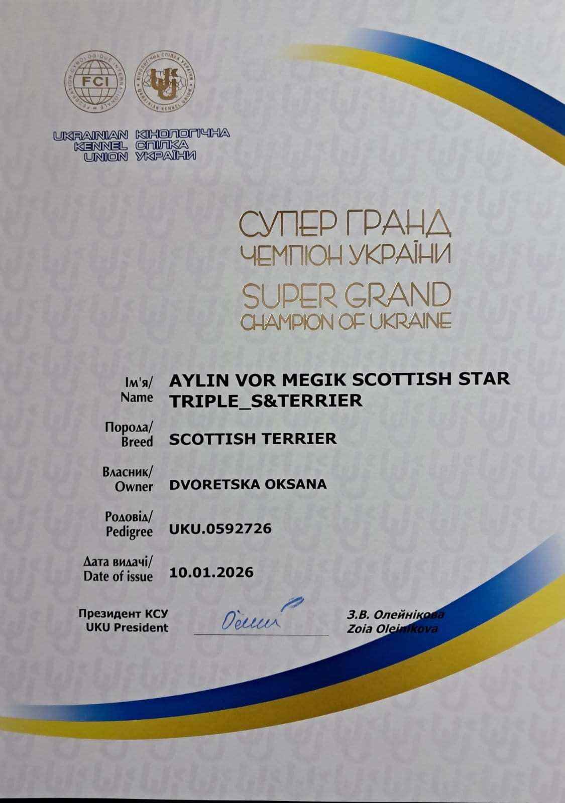
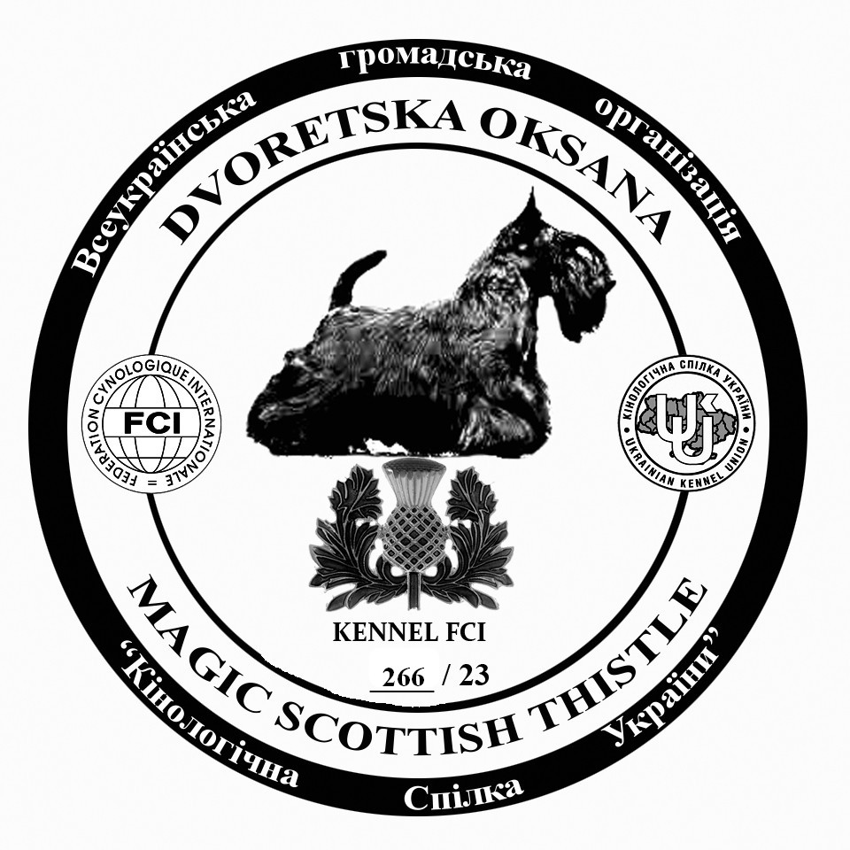
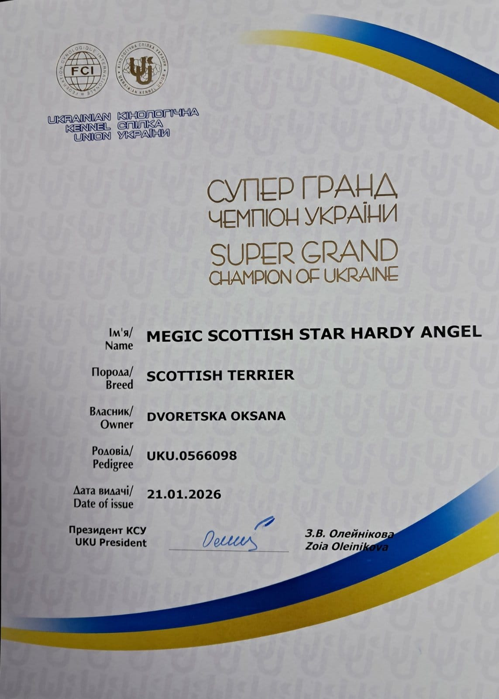
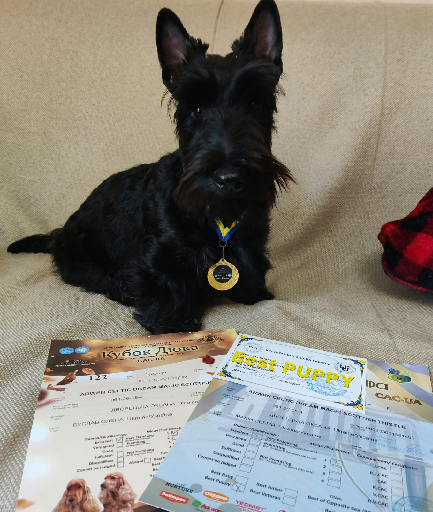

Айлін
Має титули - JCh Ukraine, JGrCh Ukraine, 3xCh Ukraine, GrCh Ukraine, SupGrCh Ukraine, BBB Ukraine, JCh Moldova, JGrCh Moldova, Ch Moldova, GrCh Moldova, BBB Moldova, JCh Bulgaria.


Має титули - JCh Ukraine, JGrCh Ukraine, 3xCh Ukraine, GrCh Ukraine, SupGrCh Ukraine, BBB Ukraine, JCh Moldova, JGrCh Moldova, Ch Moldova, GrCh Moldova, BBB Moldova, JCh Bulgaria.

Має титули - Ch Ukraine, GrCh Ukraine, SupGrCh Ukraine, 3xBBB Ukraine, JCh Moldova, JGrCh Moldova, Ch Moldova, GrCh Moldova, BBB Moldova, Ch Bulgaria, GrCh Bulgaria.

17 та 18 жовтня 2026 року на всепородних Українських виставках собак в м. Одеса отримала 4 оцінки "Велика перспектива", двічі зайняла перше місце у групі, а також отримала відзнаку "Краще цуценя".
